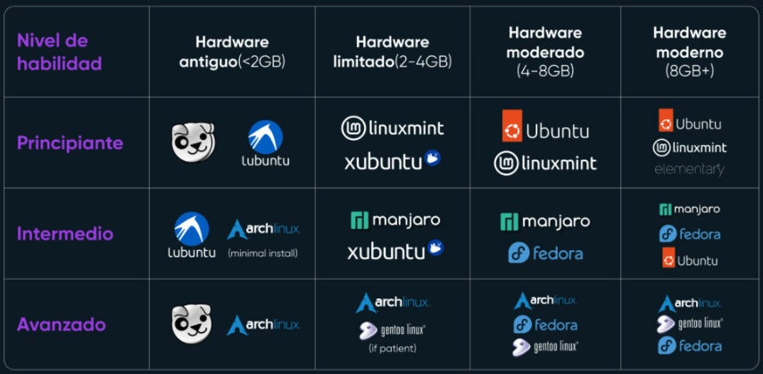

Unidad 4: Fundamentos de Linux
Linux y sus distribuciones (DEB y RPM)
Linux no es un solo programa, sino un núcleo (kernel) sobre el que se construyen distintos “sabores” llamados distribuciones.
Una forma práctica de agrupar distribuciones es por cómo instalan software (paquetes):
- Familia DEB (Debian/Ubuntu): usa paquetes
.deb. Suele ser la más “amigable” y es muy común en bioinformática. - Familia RPM (Red Hat/Fedora/CentOS/Rocky): usa paquetes
.rpm. Es común en servidores, clusters y ambientes institucionales.

Distribuciones base Debian (.deb)
- Debian: base original; muy estable y comunitaria.
- Ubuntu: muy popular; ideal para principiantes y con gran soporte de software.
- Linux Mint: escritorio clásico; familiar si vienes de Windows.
- Pop!_OS: orientada a flujos de trabajo científicos/desarrollo y NVIDIA.
- Kali Linux: enfocada en seguridad informática.
- MX Linux: ligera; útil en equipos con pocos recursos.
- Tails: privacidad y anonimato como prioridad.
Distribuciones base Red Hat (.rpm)
- Fedora: vanguardista; suele incluir versiones recientes de software.
- RHEL (Red Hat): estándar empresarial; robusta con soporte corporativo.
- Rocky Linux: sucesor comunitario de CentOS; enfocada en servidores/clusters.
- AlmaLinux: clon comunitario de RHEL; estable.
- openSUSE: destaca por YaST (panel de control).
- Oracle Linux: orientada a centros de datos y bases de datos.
- Mageia: opción independiente enfocada en usuario general.
Variables de entorno
Las variables de entorno son valores dinámicos que informan al sistema operativo y a los programas sobre cómo deben comportarse. Imagínalas como una pequeña libreta de direcciones o configuraciones que Linux consulta constantemente para saber dónde están las cosas.
1. ¿Para qué sirven?
En lugar de que cada programa tenga que adivinar dónde están tus archivos o qué idioma usas, el sistema define variables globales. Por ejemplo:
Variables de Identificación y Usuario
$USER: Muestra el nombre del usuario que ha iniciado la sesión actual.$UID: El número de identificación único del usuario (el del usuario raíz o root siempre es 0).$HOME: La ruta completa al directorio personal del usuario (donde guardas tus documentos y descargas).$SHELL: Indica qué intérprete de comandos estás usando (usualmente/bin/basho/bin/zsh).$LOGNAME: Similar a$USER, es el nombre utilizado durante el proceso de login.
Variables de Configuración del Sistema
LANG: Define el idioma, la región y la codificación de caracteres del sistema (ej.es_ES.UTF-8).$EDITOR: Define qué programa se abre por defecto cuando el sistema necesita que edites un texto (ej.nanoovim).$TERM: Informa a los programas qué tipo de terminal estás emulando para saber cómo mostrar colores y caracteres.$DISPLAY: Se utiliza en entornos gráficos para saber en qué pantalla deben aparecer las ventanas de las aplicaciones.
Variables de Sesión y Temporalidad
$TMPDIR: Indica la carpeta donde las aplicaciones deben guardar sus archivos temporales (normalmente/tmp).$MAIL: La ubicación donde el sistema guarda los correos electrónicos internos del usuario.$HISTSIZE: Define cuántos comandos puede recordar tu terminal en el historial (los que ves al presionar la flecha arriba)
TIP1: Si instalas programas de bioinformática manualmente (descargando archivos binarios), casi siempre tendrás que modificar la variable
$PATHpara que el sistema “encuentre” el programa sin que tengas que escribir la ruta completa cada vez.
TIP2: Las variables de ambiente también se utilizan para Windows y Mac OS, sólo cambia la sintaxis.
Comandos de Bash para gestionar variables
- Listar todas las variables: el comando lista las variables que el sistema tiene configuradas en este momento.
printenv
env- Mostrar el valor de una variable: Usa
echo $NOMBRE_VARIABLE. Es fundamental incluir el símbolo $ para que Bash entienda que quieres ver el contenido y no solo imprimir la palabra.
echo $HOME
echo $PATH- Asignar un valor (Variable Local): Esta variable solo funcionará en la terminal actual.
NOMBRE=valor- Asignar un valor (Variable de Entorno): Al usar
export, la variable estará disponible para cualquier programa o script que lances desde esa terminal.
export NOMBRE=valorEjemplo:
- Crear un atajo para tu carpeta de datos: En lugar de escribir toda la ruta cada vez, puedes guardarla en una variable:
export RAW_DATA=/home/mauricio/investigacion/proyectos/2026/muestras_suelo/fastq- Usar la variable para entrar a esa carpeta rápidamente:
cd $RAW_DATA- Automatizar con un comando de análisis: Si estás usando una herramienta para contar lecturas, puedes usar la variable en el comando:
count_reads.sh $RAW_DATA/muestra01.fastqSistema de archivos y estructura de directorios en Linux
En Linux no existen letras de unidad (C:, D:). Todo cuelga de una raíz única:
/(raíz): el origen de todo el árbol
Jerarquía estándar de directorios
/bin: comandos básicos del sistema (ls, cp, mkdir…)/boot: archivos de arranque (kernel, bootloader)/dev: “archivos” que representan dispositivos (discos, USB)/etc: configuraciones del sistema y programas/home: carpetas personales de usuarios/lib: librerías esenciales del sistema/mediay/mnt: puntos típicos de montaje (USB/discos externos)/opt: software de terceros “grande” (común en cómputo científico)/root: carpeta personal del superusuario (no confundir con/)/tmp: temporales (a menudo se limpian al reiniciar)/usr: programas/librerías/documentación de usuario/var: archivos variables (logs, colas, BD, etc.)
Conceptos clave
Ruta absoluta: inicia con
/Ejemplo:
/home/mauricio/tesis/secuencias.fastaRuta relativa: depende de dónde estás parado
Ejemplo:
tesis/secuencias.fasta.directorio actual..directorio superior~tu carpeta personal (ej./home/tu_usuarioo$HOME)
Ejemplo práctico
Estás en tu terminal y quieres moverte a tu carpeta de trabajo:
Saber dónde estás:
pwd(te dirá algo como/home/mauricio).Ver qué hay en la raíz:
ls /(verás todas las carpetas que listamos arriba).Ir a una carpeta de sistema:
cd /etc(aquí podrías ver configuraciones).Regresar a “casa” rápido:
cd ~(vuelves a tu$HOME).
Uso de dispositivos USB (detección → montaje → expulsión)
En Linux un USB se integra como parte del sistema de archivos mediante montaje.
1) Detección
Este comando te muestra una lista de tus discos. Busca uno que coincida con el tamaño de tu USB (por ejemplo, 16G). Verás algo como sdb (el disco físico) y sdb1 (la partición de datos).
lsblk2) Crear punto de montaje
Para poder ver los archivos del USB, necesitas una carpeta vacía donde “colgar” ese contenido.
sudo mkdir -p /mnt/mi_usb3) Montar
Ahora vinculamos el dispositivo físico con la carpeta que creamos. A partir de este momento, todo lo que guardes en /mnt/mi_usb se estará guardando realmente en el pendrive.
# montar
sudo mount /dev/sdb1 /mnt/mi_usb
# Entrar a ver tus archivos
cd /mnt/mi_usb
# Listar los archivos
ls4) Desmontar (expulsión segura)
En Linux es crítico desmontar el dispositivo antes de desconectarlo físicamente. Si no lo haces, es muy probable que los datos se corrompan, ya que Linux a veces espera un momento antes de escribir los archivos pendientes.
sudo umount /mnt/mi_usbResumen
Identificar:
lsblkofdisk -lConectar:
mount [dispositivo] [carpeta]Desconectar:
umount [carpeta o dispositivo]
Tip: Si tu USB contiene archivos pesados de secuenciación, el comando umount puede tardar unos segundos en terminar. No retires el USB hasta que la terminal te devuelva el control (cuando aparezca de nuevo el cursor para escribir), eso significa que todos los datos se han terminado de copiar correctamente.
Permisos y grupos
En Linux, la seguridad se basa en una regla simple: quién puede hacer qué con un archivo o carpeta. Como biólogo, esto es fundamental para proteger tus datos de secuenciación o scripts de análisis para que no sean modificados o borrados por error por otros usuarios.
1. Las Tres Figuras (¿Quién?)
Cada archivo o directorio tiene tres niveles de propiedad:
Usuario (u): Es el dueño del archivo (normalmente quien lo creó).
Grupo (g): Un conjunto de usuarios (por ejemplo, el “Laboratorio_A”). Todos los miembros del grupo comparten los mismos permisos sobre ese archivo.
Otros (o): Cualquier otra persona que tenga acceso al sistema pero no sea el dueño ni pertenezca al grupo.
2. Los Tres Permisos (¿Qué?)
Existen tres acciones básicas que se pueden permitir o denegar:
Lectura (r - Read): Permite ver el contenido del archivo o listar los archivos de una carpeta.
Escritura (w - Write): Permite modificar el contenido del archivo o crear/borrar archivos dentro de una carpeta.
Ejecución (x - Execute): Permite correr un archivo como un programa o entrar en una carpeta (hacer cd).
3. Cómo leer los permisos
Si ejecutas el comando ls -l en tu terminal, verás una cadena de 10 caracteres al principio de cada línea, como esta:
-rwxr-xr--Se desglosa así:
El primer carácter: Indica el tipo ( - es un archivo, d es un directorio).
Los siguientes tres (rwx): Permisos del Dueño (puede leer, escribir y ejecutar).
Los tres del medio (r-x): Permisos del Grupo (puede leer y ejecutar, pero no modificar).
Los últimos tres (r–): Permisos de Otros (solo pueden leer).
4. Comandos para cambiar permisos y dueños
Para gestionar esto en tu laboratorio digital, usarás principalmente estos tres comandos:
chmod(Change Mode): Cambia los permisos de un archivo.
# dar permiso de ejecución al dueño
chmod u+x script_analisis.sh
# numérico similar al anterior
chmod 755 archivo
# (7=Dueño total, 5=Grupo lectura/ejecución, 5=Otros lectura/ejecución).chown(Change Owner): Cambia quién es el dueño del archivo.
sudo chown mauricio secuencia.fastachgrp(Change Group): Cambia el grupo al que pertenece el archivo.
chgrp bioinfo_team resultados/Ejemplo de uso real en el laboratorio
Imagina que tienes una carpeta con resultados de un experimento que quieres que tus colegas vean, pero que nadie pueda borrar o modificar excepto tú.
- Te aseguras de ser el dueño:
chown mauricio resultados_pcr/- Asignas el grupo del laboratorio:
chgrp investigadores resultados_pcr/- Ajusta los permisos:
chmod 750 resultados_pcr/7 (rwx): Tú haces todo.
5 (r-x): Tu grupo puede entrar y ver los archivos.
0 (—): Nadie más en el servidor puede siquiera saber qué hay dentro.
Tip de seguridad :Si intentas usar un comando y recibes el error “Permission denied”, probablemente necesites usar sudo (para actuar como administrador) o pedirle al dueño del archivo que te dé permisos de lectura o ejecución.